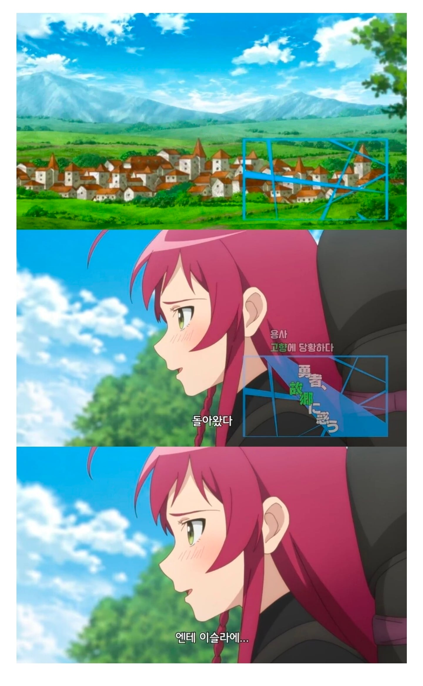

킹덤컴에 보면 잘 나옴
세일할때 진짜 사야지
것두 성에 사는 귀족 기준이지
평민 이하는
도시에는 요강에 모았다가 길바닥
농촌은 두엄터미임
거기 밑에 바위벽 갈색빛으로 오물칠해진거보고 기겁했다 진짜
현대인으로서 태어나 살아갈수있음에 감사한다
그건 귀족만임ㅋㅋㅋㅋㅋ
유럼 중세시대 성 보면 건물에 구멍을 뚫는게 아니라 약간 지금의 불법 증축물처럼 건물 바깥쪽에 화장실 만들어서 바깥으로 떨어지게 만듬
스위스 여행 갔었을때 몽트뢰 쪽에 시옹성이라고 몇백년된 중세 성 있는데 거기에 있는 성 형태가 위쳐랑 킹덤컴에서 보던거랑 거의 비슷했음
알바뛰는 마왕님 저런 장면이 있엇나? 오래되서 기억이 안나네
2기 새로나온거인듯 작화꼬라지 보니
아 너님때문에 기억남 작화 븅신이라 안봤지 생큐
ㅋㅋㅋㅋㅋㅋㅋㅋ 나도 ㅅㅂ 2화까지보고 안본 기억 자체가 삭제됬었네
ㅋㅋㅋㅋㅋㅋㅋ
동남아에서 시집온 여자가 고향 갓다오고 빠르게 돌아 온 이야기 같은거지
동남아 2세가 더 불쌍 ㅋㅋㅋㅋ 명절날 외가 가야함 ㅋㅋ
외가를 자주가진 않지
그 외가도 나중에는 바뀔수도 있어..컨츄리함이 매력일수도
아빠왔노
비교 ㄹㅈㄷ
베트남 국결한 친구 아내가 신혼초에는 자기 나라 그립다. 가고싶다. 엄마보고 싶다 이랬는데
결혼하고 2년정도 살고나서는, 고향에 돌아가도
베트남 덥다, 베트남 시끄럽다, 베트남 가족들 부담스럽다.
빨리 한국 돌아가고 싶다. 이러더만 비행기 티켓도 일정 땡겨서 집으로 돌아옴 ㅋㅋ
옆에 딸임?
딸인데 본인이 낳은 건 아니고 천사의 파편 같은 거임
태어날 때 본 게 용사랑 마왕이라 용사를 엄마, 마왕을 아빠라고 생각함
와...쾌락없는 책임
앵? 2기 나옴?
작화 꼬라기 왜 저래
이게 2기가 나왔어?
생각해보면 고대 왕이 나보다 맛있는거 종류별로 먹어봤을까 싶긴함
만원요리최씨남매(만원X남매X) 유튜트 보면 고대까지 갈 필요도 없고 중세 조선시대 궁중요리 만드는것만 보더라도 현대문명이 인류 삶의 저점을 얼마나 올렸는지 알 수 있지.
현대 식품공학이 만들어낸 조미료, 보존 및 운반기술로 만들어낸 신선한 식재료, 유전공학을 비롯하여 수십,수백년에 걸쳐 이뤄진 품종개량으로 이뤄낸 맛의 향연은 진짜 대단한거야
오죽하면 미국 록펠러 가의 삶보다 현대인류의 삶이 더 부유하다고 하겠어
고기를 잘게 다지는 이유가 질겨서라며
왕은 오히려 너무 바빠서 삶의질이 별로 일 것 같고
중세시대 귀족에 비해 지금 시대의 기초수급자가 삶의 질은 더 높을꺼임
그런데 행복도는 또 별개임
앞으로도 먼 훗날 몇십년 뒤에 지금은 상상도 못하는걸 당연히 누리고 있겠지만
그런 삶이 더 행복할지는 모름
흔히 영화에서 많이 나오는 하루종일 가상현실에서만 지내는 삶 같은거
고대왕도 베민딸깍보다 못할듯
원작은 복선들 회수하면서 결말까지 쭉 무난하게 갔는데 이걸 이렇게 조지는 것도 재주다 싶었음..
애니명?
알바뛰는 마왕님
감히 지금 평양냉면을 돌려까는거냐
화장실 따로 있는것도 다행아님? 유럽은 건물에 구멍뚫고 쌌다며?